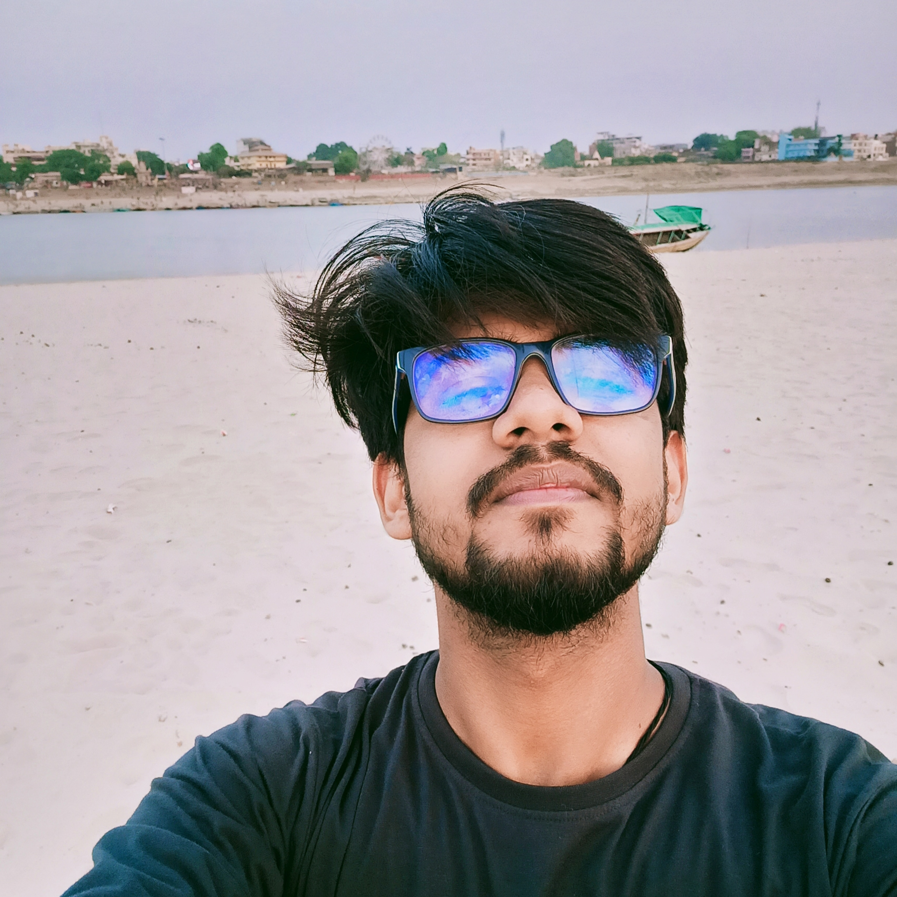

Shubhendra Kumar

Objective
Looking forward to make good use of my interpersonal skills and also to expends them.
Education
- Kendriya Vidyalaya Jamuna Colliery
- Indian Institute of Technology (BHU)Varanasi
Projects
- Blog WebApp
- Blog website where users can create and read blogs provided that the user has an account on it.
- I designed the front end of the application using HTML, and CSS.
- Used NodeJs and Express for the backend and to implement CRUD functionalities.
- Video Conferencing WebApp
- Developed a Web Application by which a group of people can join a single platform and have a Video Conference with features including screen sharing, chat, and other common features.
- The web app was developed using Node js, express js, HTML, CSS, Javascript, webRTC, Socketio and MongoDB
Work Experience
- Product Designer Mediport
Dec 2020
- Designed multiple templates for various medical reports of different tests for the Company.
- Developed ideas as part of a team and created design concepts using computer software.
- Participated in product ideation through brainstorming sessions, review of concepts, and interaction with cross-functional teams.
- Creative Manager Technex'22
Feb 2022
- I was responsible for the monitoring and approval of digital content drafts used for media advertising, social media communications, and other related marketing campaigns.
- Inspected the design layouts and ensured that high-quality standards were maintained.
Skills
| Javascript |
✨✨✨✨ |
| HTML/CSS |
✨✨✨✨ |
| NodeJs |
✨✨✨✨ |
| ReactJs |
✨✨✨✨ |
Achievement
- Finalist in moodling in Mood Indigo IIT Bombay December, 2020.
- Winner in Doodle Art Competition IIT Bhilai November, 2020.
- Second Runner up in Kalakriti IITBHU October, 2020.
- Winner in Intra college creativity competition IITBHU.
Contact Me |
About Me